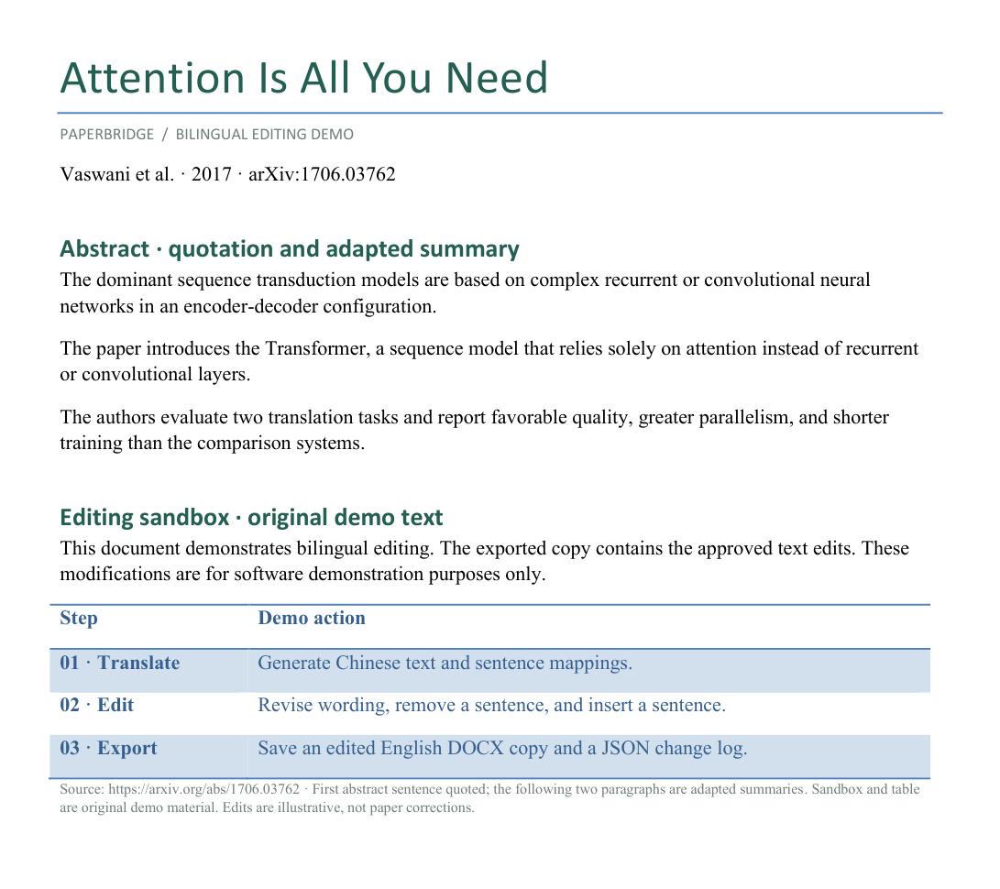
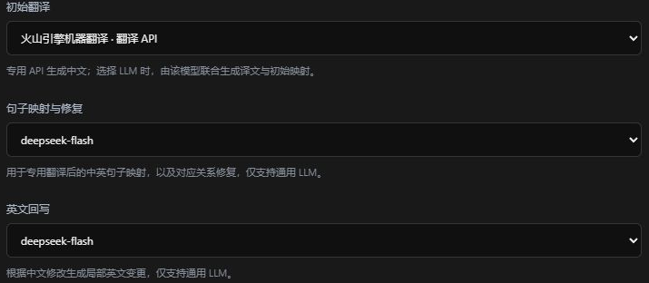
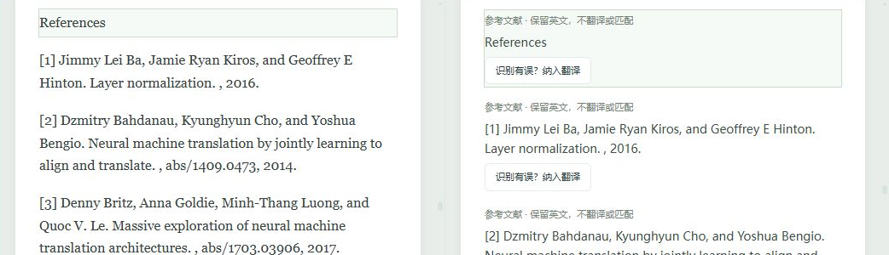

桥 PAPERBRIDGE / 纸桥01 / 08
一座连接中英文写作的桥
导师：这句话，
说得太满了。
改中文，同步改英文论文。
中文正文 · 修改前 → 修改后
我们的方法彻底消除在测试集上减少了幻觉
英文回写 · 检查变化
Our method eliminates reduces hallucinations on the test set.
导入英文 Word，对照阅读。
修改中文译文，再核对英文变化。
桥 PAPERBRIDGE / 纸桥02 / 08
READ IN TWO LANGUAGES
先读懂，再动笔。
英文原文与中文译文，对照着看。
保留文稿上下文，左右对照阅读。
译文仍需作者审校。
桥 PAPERBRIDGE / 纸桥03 / 08
EDIT THE TRANSLATION
直接改这句中文。
对应英文，由模型同步回写。
↑编辑的是正文译文
修改流程
01 直接编辑中文译文
02 模型回写对应英文
03 检查英文变化
写清想表达的意思，再逐处检查模型生成的英文。
桥 PAPERBRIDGE / 纸桥04 / 08
REVIEW THE DIFF
英文改了哪里，
一眼看见。
删掉什么、新增什么，逐处核对。
上述真实改动的文字放大
relies entirely solely on attention instead of recurrent or convolutional layers
不同措辞与句子增删演示。差异展示帮助作者核对，不替代判断。
桥 PAPERBRIDGE / 纸桥05 / 08
EXPORT & KEEP A RECORD
检查完，带回 Word。
另存英文 DOCX，也能保存 JSON 修改记录。
实际导出 DOCX · Microsoft Word 渲染

另存后的英文 DOCX 可在 Word 中打开。
桥 PAPERBRIDGE / 纸桥06 / 08
CHOOSE YOUR SERVICES
翻译、映射、回写，
可以分别选。
专用翻译 API 或通用 LLM，按任务配置。
01 初译
翻译 API 或 LLM
→02 映射
选择 LLM
→03 回写
选择 LLM
专用翻译 API火山引擎机器翻译 · DeepL API
Azure Translator · 自托管 LibreTranslate
通用 LLMDeepSeek · OpenAI · Anthropic · Google Gemini · Kimi 开放平台
支持 LM Studio 本地服务及兼容协议的自定义接口
实际使用组合火山初译 ＋ DeepSeek 句子映射
也可配置 LM Studio 本地模型
真实设置界面 · 当前配置

具体模型取决于账号可用性与结构化输出能力。服务请求按所选配置发送。
桥 PAPERBRIDGE / 纸桥07 / 08
ONE MEASURED EXAMPLE
这次句子映射，
DeepSeek 约 ¥0.12。
Attention Is All You Need 单次样本。
DEEPSEEK FLASH · 句子映射
98,982 tokens
输入 91,124 ＋ 输出 7,858
控制台消费经使用者核对。
顺序执行约 5 分 51 秒。
2026-11-04 · 可编辑 Word 重建稿。单次实测；不含后续英文回写。火山费用视剩余免费额度。两段映射修复另计约 ¥0.0029。图像内部文字及脚注未翻译，译文需审校。
真实界面 · 参考文献跳过

桥 PAPERBRIDGE / 纸桥08 / 08
GET STARTED
带一篇 Word，
试一次中文修改。
从对照阅读，到检查英文，再到导出。
01 配置服务
02 导入 DOCX
03 编辑中文
04 检查英文变化
05 导出 Word
开始之前
需要什么环境？Windows ＋ Microsoft Word 是原生版面验证环境。
需要配置服务吗？需自行配置 API 或本地模型；费用按所选服务计算。
修改保存在哪里？可另存英文 DOCX，并保存 JSON 项目记录。
映射是什么？为中英文建立句子对应，回写后仍需检查译文与英文。
github.com/jkjkiiiii/PaperBridge